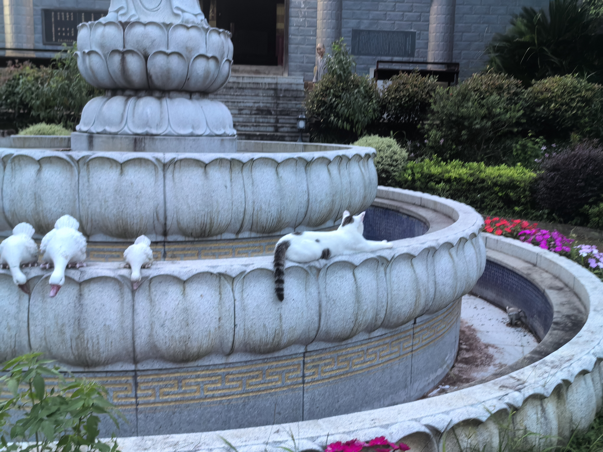

故事从近四个月说起：
先谈谈上一次未公开的长文吧。
[20240409]【筑居思之旅居而思】 知行合一·强迫每件事都有好的结果，是懦弱的表现
好久好久没有写长文记录思考，上一次应该还是22年底写年终总结吧，不禁让我反思应该给数字花园除除草了。
从最近说起
近一个月，生活选择发生巨变，带来了思想上的巨变。我开始不断反思，把自己的观点与他人的观点分离开来，选择相信认可的贵人，清除负面的瘴疠。
考研失利后的改变
最近对外不再宣称自己是INFJ，本质上我是一个喜欢人类的人（广义），但在过去一年半里，我因为追逐考研，把自己埋进一个不愿再和别人说心里话的厚重土地里。而在此之前，我是以阳光积极的心态面对生活中的事物。是的，考研，让我毁了。我并不觉得我需要如此长的周期来培养我的定力，事实上我觉得这方面我已经做得不错。那考研给我带来了什么？知识点？——实则当下就已经忘记了七七八八。留下的似乎只有痛苦的回忆以及飙升了两千的英语单词词汇量。
回想起那段时间，更多的还是痛苦。只不过，当下就是快乐的吗？也不尽然。但我认为三月初和北师大老师的对谈让我发现，世间处处是牢笼，只看你自己心态几何。走在什么路上就要尊重什么道路上的信仰，这样大抵是快乐的吧，至少不会觉得价值观和自己的认知冲突太大。当然，如果你愿意改变自己的认知，那么就变革你的信仰。
我曾经以为自己的信仰之城是将学术进行到底，随着三月初的对谈烟消云散。为什么我认可了？一是因为这次真的有对方的背景背书，另外一个是，我确实没有考上，我需要这份“科研世界并没有想象中美好”来磨灭一下不切实际的幻想，否则也太痛苦了吧？我其实并不能知道真相几何，只是我想给自己一个交代了。尽管我无限追求真理，却也真实地最近再也看不进去大部头书籍了。难过之余我觉得自己的状态一定会好起来的。我想要去寻找一份工作，这样在工作之余我就有闲心去读更多大部头书了。虽然以我的实践经历来看，进入工作或许是读成功学书籍更多一些呢。不过没关系，下次实践说不定就是会改变自己的态度。
我要走，要重新出发
还是在三月初，买下飞云南的机票。其实当即就在后悔，如果没有到付款的界面，我想我会直接放弃这段荡涤我心灵的旅程吧。好在，我最终坚持了自己的内心。其实我是不知道旅行能带来什么的，也并没有因为云南有多少好风景而感到期待，23年封闭的世界观也并没有让我知道刘亦菲《去有风的地方》带得整个云南都是裸辞休息的人，我只是觉得，那里听起来有些新奇？或许是因为阿歆在22年暑假也去过，和我分享过旅行的照片，是的，可能就是因为身边人的出发而心动的。本质上我过去是一个极容易受到身边好友影响的人。
一些旅行碎片记录
结缘：有趣的人
在数字游民NCC社区，结识了来自新西兰的Neo、Stella夫妇，他们向我介绍了从未了解过的“内观禅修”法。跟我谈到修行“戒定慧”的意义，我们先要守戒律，然后练就定力，最终达到真正的智慧。我听到定力这个阶段的候就深感这件事的必要性。Neo已经在东南亚修习了两次十日内观课程，而Stella也在他丈夫的推荐下上过一次课程，他们回来后也推荐给了弟弟妹妹们。尤其提到说非常建议参加工作前去一次。于是埋下了我心里的小小种子，或许我也有非常必要去一趟吧。在与他们的接触中我还逐渐发现：
下一步计划
新西兰夫妇在临别前说：别的都可以忘记，最希望你可以做有趣的人。是的，他们说出了我的所想。我的毕生追求依然是做个有趣的人。如何定义有趣？其实我没有明确定义。只觉得
我所认为的有趣的人不是有多少猎奇生活经历的人。（而在此前是误把多彩当成唯一认可的价值观的，实则我发现坚持做好一件事也是值得被尊重，甚至在我的价值体系下会变得更重要，或许因为自己总是给自己树立“非标准建筑学生”的title吧，或许是因为我的大学因为体系问题所以只能容纳每一个非标准的老师吧。我一直推崇的“非标准”最终落实到现实，我的结果也是非标准的。以至于我并不能很好地预测自己，但我还是愿意相信算命先生的话，先躺平两个月，然后坚持坚持再坚持下去。相信自己最终可以拥抱胜利）
能够有知而无畏地拥抱人生，接受无常，珍惜当下。利他而利己，日有所益。成为“精神贵族”而非“精神附庸”。
那么，应当是我所认为的有趣的人吧。
过去所有的经历塑造了我的价值观，本质上我也在筛选身边的人。我是一个爱憎分明的人，本质上不喜欢的人就会远离，可能有一些极端但是很感谢身边人愿意和我共同迈向远方。我不是一个会停留在当下状态的人，我一定会出发。那么希望我们可以一起前行，如果你选择留在原地，我也不会怪你，或许只会觉得缘分已尽，那就祝你安好，是我最后的温柔。不过很可惜你会看不到我远方的风景，因为我觉得我的远方一定是值得期待的，不管好坏，依然期待，风风雨雨也都是我的必然。
比起方向，更重要的是坚持。我深以为然。
之后的一段时间还写下了毕业设计致谢，我想也是值得分享

[20240708]【筑居思之禅修而思】与外界失联十天，我收获了什么？
排除万难也要出发
过去的生活状态失去了能量，我在今年三月份前往大理企图找自己。
在大理，我结识了来自新西兰的Neo、Stella夫妇。他们告诉我内观禅修可以帮助我们修得“戒定慧”。非常建议在工作前去一趟，我便下定决心出发。三月想着五月底我完成了学校事宜，在六月便可以出发！然而当我在检索国内内观网站时发现，内观禅修也太火爆了些。我在上上下下核对着每一个十日课程的时间，只有六月初的课程还算合适，但还没开放报名。于是我定了个待办提醒，但报名当天别的事情太忙了就想着延至第二天，没想到的是我竟然报不上名！只剩下候补排队了。我有些失落，决定说过几天再看看。后来看到候补可以再报名就火速报上了2024.6.1-6.12在石家庄的课程，但也随缘认为也有一半概率参加不了。我给内观中心打电话咨询，他们说，只要去排队了很大概率就可以报上，因为报名成功的学员们会因为各种原因取消报名。于是我耐心等着，直到有一天，收到了他们发来的录取邮件，非常欣喜。便开始准备着行程规划。不过与此同时，就很难有机会与大学挚友去参加毕业旅行了，我在这双趋冲突的两难问题上困住了，一直拖到了五月底毕业答辩。那段时间我还在对接工作材料，并没有完全处理完，但如果去禅修就是全封闭十二天，不能用手机十天，我怕错过重要消息。那怎么办呢？禅修一定要去，毕业旅行也非常想去（去年和洪少讨论着要去大西北（他已经忘记）），错过就是永远的遗憾，因为毕了业，其实也很难凑到那么多朋友的时间。最终决定权其实交给了工作材料这件事，还是因为没有处理完，退掉了6.1-6.12的报名课程，改报至6.16-6.27武夷山的课程。于是我的西北行便也同时在上半个月筹划了起来，但约挚友的时间也是困难的，幸好，我们还是成行了，一次每个参与者都绝口夸赞的旅行，真好。我在6.11左右旅行结束后飞回福州，等待着课程。没想到在课程开始的前一天（6.15）接到了延迟的电话，原因是近日受连续暴雨的影响，山路被封，学员们无法进山。在我还在踌躇不知所措之时，又接到课程延期一周的消息。
延期至6.22-7.3，其实对我来说这个时间非常尴尬，因为临近毕业有许多要处理的大小事宜，家中琐事也三三两两，且很快就要离开福建了，或许还要在毕业前回学校再见见恩师和好友。我又犹豫起来。在和多方面协商之下，终于定下来自己要去，还好之后的一切都非常顺利。到了武夷山和司机师傅聊天才得知，山路前一天才解封。
太有缘，实在是太有缘了！对于这样未知的哪天洪涝可以消退的问题，但凡课程早一天，都将无法顺利进行。
在后续的课程里，我发现，这趟修行，我真的来对了！

课程进行时
这不是玄学哦，不是知识或者哲学上的满足，不是宗教信仰，也不是mind cure。
这是mind surgery，是每个人都能够也只能够从实践中学习的科学方法，可以帮人脱离痛苦、使内心平静有爱、使大脑更加智能的修炼方式。
非常非常值得安利给大家！！！所以最近虽然时间线非常忙碌，也想着一定要尽快写出来给大家安利一下！
十日课程的总体时间安排是：
课程的教授是先播放一遍原版葛印卡老师所唱诵的巴利文，然后用中英文双语翻译，引导你利用它的方法去禅坐。
其实一天下来需要打坐13个小时，其中每隔一个小时可以休息五分钟的时间。
十天的时间里，我们需要保持每天有三个小时的时间是绝对的静坐。在此期间我们需要保持一动不动(TAT真的太难啦，我作为真正的新生学员，非常非常痛，绝对的疼痛带来的是绝对的升华）。
其余10个小时，是可以变更你的姿势，当然，尽量要避免打扰到其他同学，需要很轻微很轻微地移动你的身体。
以下是我们的作息时间表：

或许你会觉得四点起床太恐怖，事实上和我同宿舍的师姐们也是这样想的。天还没亮怎么起得来？不过入住第二天播放的阵阵敲钟声证实了，完全能醒，且第一声就醒来（我的身体反应更奇特，还没到四点就自然醒了，或许就是节律了吧）。
戒律
在这里讲究过午不食。翻译成现代文就是过了中午十二点就不能吃饭。所以我们的餐饮仅有早餐及午餐，全素斋，所有食物仅能在餐厅食用，不可带离餐厅，否则及犯了戒律。早上多为馒头+三四种青菜+粥的配置，中午是主食+三四种青菜+汤，最开始的第一天和最后一天吃的是面条，中间的餐食不固定，根据厨房采买来定。
不过作为新生，在下午五点到六点的茶点时间是可以吃水果（当季我吃到的是西瓜/李/桃/香蕉这样的配置），旧生只能喝柠檬水。事实上吃水果是非常容易饿的，我往往在晚上八点左右就饿到肚子咕咕。
饮食要尽量吃七分饱，让自己的头脑更加清醒，不至于昏沉到无法打坐。
新生要守五戒，它们是不杀生、不偷盗、不邪淫、不妄语、不饮酒。

武夷山宿舍条件是六人间，男女全程分开的流线（除了在禅堂是分别在东西两侧打坐，但也要保证全程无眼神接触，防止互相打扰）。我们一期大约是30+个男学员及30+个女学员的配置，中心并容纳不了很多人，到这里我明白了为什么很难申请上了。学员中大部分是新学员，这次也有十几个旧生参加。那边有招募的义工，但仅旧生可以报名，且报名渠道和新生一致。课程的主要负责人是事务长，我们那期有四位，他们是禅修多年的旧生，也是以志愿者的形式参与过来的，随着课程的结束，他们也要离开。

课程是全免费的，只接受旧生的捐赠布施。

官网关于费用的介绍
谈谈我的每日感受！
因为全程不能说话，电子设备全关机后上交，也不能用纸笔记录内容。因而对于具体的天数记忆可能有些模糊。这一部分写得非常主观，且不能保证正确，所以就是大家大致了解一下是如何就行！
day0 入住中心。介绍这个课程。
我们不穿袈裟，不用削发，我们只需要保持和在日常生活中一样，且守戒律即可。老师也是如此，老师并不是出家的僧侣，而是修习内观很多年的人。因此内观禅修并不存在宗教信仰。
day1 开始学习part1 观息法。但在保持打坐的时候感觉到强烈的疼痛。
day3 能够真正静坐一个小时但无碍。
day4 开始学习真正的内观。学着从上到下开始注意着身体里的每一个部分。
day5 全身每一个部位都可以感觉到畅快的流动
day8 感觉到全身细微的波动，波动。正如释迦牟尼佛所说，我们是由无数次原子微粒的波动构成的。虽然还没有感觉到全身消融的流畅感。
day10 重复体验过去的感受，但更深层地可以察觉到自己静下来了。这一天早上八点我们开始可以说话，重新和外界发生言语上的连接，这感觉很好。这三个月非常深切地感受到我喜欢和陌生人聊天。
我同餐厅的同桌师姐聊天，关心了一下她前几天上课突然被另外一个师姐拉扯起来的事情。好在，她好了很多。她同我说起自己来这里的因缘和合，我发现巧的是，她刚从大理回来，在古城也住了两个月光景。毕业五年干了六份不相关的工作，积累下来的其实是通用能力。现在的状态是几天后即将飞往悉尼，她申到了一年工签，将在那边展开一段新的旅程。但
课程最后一天，拿到了手机，其实就是比较担心重要的消息，好在我处理地比较快。所以其实没有很担忧的事情，也不存在我们完全离不开手机。适度就好啦。
同老师说的一样，我们拿到手机后再进行禅修，能静下心来的专注度明显降低了许多，平时能坐一个小时的，现在做不到全然不动了。因而第九天的课程其实才是修得最好的那个阶段。那个当下很不错，但也仅是评价那个当下而已，不需要和未来再对比，这是我在这里学到的“平等心”。
day11 这一天我们分组进行了全中心范围内的打扫，我和另外五个师姐负责打扫禅堂，由于师姐们办事效率极高，所以我们非常顺利地早早结束并返程。我也回学校啦，和朋友们约着毕业的事宜！

课程结束后，回家的第一天晚上，感觉到身体里有股强大的能量，坐在那会有强烈的振动感，全身经脉不可控制地涌动。我当即便觉得，现在要开始内观打坐了！打开下载好的音乐坐下一个小时，真的会感觉到深刻的宁静。
时间追溯到2024/04/28的想法：
际遇是什么呢？际遇其实就是选择。
选择有对错优劣吗？或许在当下是有的，但拉长线来看，不会有。因为变化会中和掉对错。
标准是什么呢？标准就是你甘心把自己拿去跟别人比较。
为什么会不想努力？因为这个事情不是你想努力的事情。
而在2024/07/04我禅修出来的第一天，是这样看待的：
佛陀教导的正确看待”变化“，一切都在改变，可能好时非常骄傲，可能坏时非常沮丧。幸运的是，一切都会改变。
自然主义教育
我发觉我们这一代人对自然主义教育其实是缺失的。比如说我们不知道自然界的各种原理，在东山禅寺闭关的几天，我遇到了一只绿色的蟋蟀趴在青草上。没想到过了几天同住的师姐说，在房间遇到了棕色的，我方才知道，原来蟋蟀会在一个季节里脱壳变色！
师姐们还说这有栽种许多鱼腥草，有个师姐她有天感觉喉咙上火，就去院子里摘了些回来。而我甚至不知道鱼腥草在新鲜的时候长什么样。现在虽然有很多识图软件，但并不会通过这样的方式去学习中草药吧？也不知道这些中草药的药性。
我想，我们这一代人真的缺失了许多，许多自然主义教育。
我们，生长在城市里面，与大地脱节，扎根于混凝土里。是没有办法与自然时刻相敬如宾的。
那就——复得返自然。我忽然想到在大理的光景，阳光是那般热烈，是生命力的气息。
在大理，有很多北上广深过来的家庭，带着小朋友在这里接受自然主义教育，他们在田野里在林海里相遇昆虫与鸟兽，和花木对话。我很喜欢这种方式，或许也是值得我们这一代人去用某种方式缓冲吧？或许就是我们称之为特种兵的周六日？你会去看山川湖海，去观世界，去找自己。
保持觉知与平等心，用爱与慈悲去和世界发生振动
正如我微信新换的slogan：保持觉知与平等心，用爱与慈悲去和世界发生振动。
前半句是今年发现的，后半句是去年跟着史老师上瑜伽课每节课的结束语。
如今，成为我的处世哲学。
临毕业尽自己最大可能见了身边的朋友们，他们说，我这半年小至最近一个月发生了翻天覆地的变化，心态与精神状态都明显更有力量了，小芸说是高知书卷气哈哈哈，小郭说是拍完毕业照以后到现在就变得很好很好，ab也是如此说。我最近和大家合影，也觉得自己气色真的还不错。我在想，或许从大理到莫高窟再到禅寺，真的给了我太多的能量场吧，所以回来以后，就超想和大家分享。
也正是大理→莫高窟→武夷山，真的全凭缘分走完这些路。事情的巧合会在事情发生后得以显现，或许就是因缘际会到这次真的有缘参与武夷山课程吧。所幸。
要对每种感受保持平等心。遇到粗硬的疼痛感时，一定要保持平等心，尽量不要因为疼痛就憎恨它。同时不能对愉悦的感受有太多的贪求。贪爱嗔恨都是不良的，我们应当保持平等心。如此这般，才能。
我们要学会从光明/黑暗中走向光明，而不要再走入黑暗。而这其中的奥义，就是修行正道之法。
我们所有的成就并不是因为我们有多努力，做得多好，而是因为过去的善业积累下来的福报。如果你开始造孽，那么不仅影响你的当下，更是影响你的未来。
我们应当积善业，存善德。在当下你就会受益，此外还能对未来有所助益，这多好呀。
培养掌握当下的能力就是内观。我们从出生到现在，一辈子都在往外看，看外面的世界纷纷扰扰。殊不知，我们连自己的身体都没有弄明白。所以内观就给了我们一个向内看的渠道。其实使用这个法门是不会感觉到痛苦的。
我们不能改变别人，只能改变自己。通过内观的方式我们就是在了解自己。除非你可以从多方面了解同一个问题，才能接近完整的实相。
我会推荐大家参与并不是因为你需要立刻马上就换个心境，相反，我鼓励大家活在当下，就像佛陀在世时也是这样说的。（说到这里其实我到上课的时候才知道原来释迦牟尼佛也就是乔达摩悉达多原来是一个印度的王子，我一直以为被尊为神就是神，是我知识浅薄了。了解佛教的人可能并不陌生，他5岁在树下打坐，35岁涅槃，80岁圆寂，35-80岁之间都在普度众生，直到临死前还在教导正法。创立佛教的同时，我想也是人们足够信服他，才将他视为神）
不过了不了解佛教历史并不重要，也不影响你了解这个内观禅修课程本身。事实上，你可以信仰任何宗教教派，来这里上课也并不违背教义。全世界范围内都有各种教派的人修习本课程。为什么如此说适合大众？因为修习的是正道，是真理，具有普适性，不会因为你是什么教派的人才能拥有这种真理。这一点，在你了解更多这个课程本身时可能就会发现到吧。
或许未来我将把这种禅修生活方式延续下去，老师建议一天打坐俩小时，早晨和晚上各一个小时。听起来很久，实则修行可以帮助我们提高做事效率及减少睡眠时间。所有的事情会变得更加优质。（这一点我还停留在理论层面，等我践行一段时间再和大家分享近况吧！）
未来还打算有机会就多去一日禅修练习，多参与共修，巩固学习成果。一年争取回来上一次十日课程，有机会的话还想成为义工（好辛苦的，别人吃饭的时候你只能看着。等大家吃完了再吃。能培养更多平等心和爱吧。
其实很意外，就是国内外很多精英大佬也是爱进禅院修习本课程的。或许就像Neo哥一开始说的时候打动了我的一部分原因是，乔布斯有到今天的发展，大多因为去日本学习了禅宗吧。我深以为然。
非常感谢那边的老师和师姐们对我的关照，虽然全程不能讲话、不能用手机，一切事情都发展得刚刚好。恰如我刚来那天的晴朗。

内观禅修报名网址＆官方介绍
请注意，因为本文掺杂太多个人感受，或许有所偏颇，所以请不要用专业的眼光来看待，若您想了解具体事宜，欢迎登录以下链接：
中国内观报名网
只有都江堰课程在内
其他报名网站
有山东青岛/河北石家庄/福建武夷山/四川成都都江堰 四个地址可供选择，您可以就近及根据课程时间来选择，一般是一个月有两个时间段。
该网站是我本次参与的报名链接。
中国少年儿童观息课程网
少年儿童观息课程的对象是8周岁到12岁的小学生，以及13岁到18岁的中学生。课程期间，学生学习观息法，这是练习静坐的第一步。
已经开始练习观息的少年儿童将获得诸多利益。他们的专注力增强了，记忆力得以提高，理解能力得到了提升，他们也变得更加平静了。总而言之，他们感觉已拥有一个实用的方法来面对各种逆境或挑战了。
在课程期间，会有关于静坐的指导以及其它的活动，如游戏、美术、讲故事等等。在许多活动里，将根据少年儿童的年龄把他们分成不同的小组。他们将由小组长带领，小组长会陪伴并协助他们参与整个课程，且在必要时提供支持和帮助。
课程目的是让少年儿童能体验到静坐的益处。有规律地练习观息有许多益处，包括：
1）增进专注力与记忆力
2）增进心的觉知与敏锐
3）增进自信心
4）增进工作与读书的能力
5）增进对他人的善念
少年儿童学习静心与专注时，也能够发展觉知，更加能够控制自己的冲动。让他们学习这个静坐的方法，一辈子都能够获益。
国际内观中文网
本网站涉及全世界50多个国家200多个内观中心，若您在国外想参与活动，可查询以下链接。
有缘，一定会再次相遇
此行深感全靠缘分。包括从大理对禅修结缘，在莫高窟感受强烈的佛教场所渲染的气氛，包括能够排除万难成行，包括这次真的要毕业了回学校总能偶遇到对这五年光阴很重要的人。冥冥之中一切都帮你安排好了。
能去成这次旅程，我是真的很幸运很幸运。我是全中心这批学员里最小的，他们大多30-50岁，有位阿姨是一位师兄的妈妈，她有60多了。从来的第一天起，那位文化衫上写着“只是知道”的师姐在办理我的材料时便说起，觉得我太有智慧了、福报很深，才能在这么小的年纪就能接触到这些。我回答道：”也是我的荣幸之至，能有缘分，真的是我求不来的，我要好好修习课程，有机会回去就推荐给更多的人”。果不其然，在上课的时候我就察觉到了这个方法的好处，一直想着写我的公众号呢，不过葛印卡老师有一天在开式的时候说了，想到要推广的时候一定要把心拉回来，因为我们现在是在内观！所以我就经常性地“把心拉回来”，不想身体以外的东西了。不过现在结课了，我就想着赶快记录下来，和大家分享！
我愿意相信，所有事情都有它内在的因缘和合。正如你能读到这里，或许你就与这段文字、这些感受有缘。虽然不一定能带给你很深的启发（如果有的话我会感到很荣幸），但或许在浅层面你开始了解到，有这样一个事情，那么就是缘分的开始。
不过，我不希望你读了这篇文章就马上兴致勃勃地去报名禅修活动了。那样或许有些草率，你必须清楚地了解到这是做什么的，并且你有刚好的时间（这很难，毕竟我从开始想到实践花了两个月，到成功排除万难参与课程又花了一个月的时间，仅仅差一点就去不成了）。你还得愿意排除万难，能够接受10天完全手机关机、全程保持不说话的状态，并且身体也得扛得住能每天打坐十三个小时，痛、真的太痛了。
这个方法并不是旨在让你痛苦。而是期盼着我们从痛苦中解脱。观察痛苦是为了观察事物是在不断变化着的，可能突然你会遇到很困难的事。不过过了一段时间，你或许又会感觉到身心的愉悦，就好像事情的变化本身。

注意事项
文末重申，本文感受部分较为主观，课程部分我尽量保持客观，但或许有一些错误，欢迎指正。
若您想了解更多信息，也欢迎私聊咨询我，我将尽所能帮助您。同时我也尽可能把真实的情况分享给每一个人。
愿您快乐、安详、和谐。